- 分支
- codex/full-smoke-regression
- Base commit
- 6d8128a
- 服务
- ztask serve · loopback 18123
- 数据
- 一次性隔离目录，备份/恢复使用独立目标
- 测试数据
- 2 任务夹、3 持久任务、2 活跃成员、1 已归档成员
Full-stack GUI smoke
ZTask 全功能冒烟报告
基于 main 最新提交构建，通过 Chrome 对管理端、成员端、看板历史、分享生命周期和备份恢复做真实 GUI 冒烟；发现 3 个 P1 回归，已按 TDD 修复并回归通过。
27冒烟场景
24直接通过
3修复后通过
401自动化断言
Environment and Artifact
2026-11-03 · macOS · Chrome · ZTask 0.1.0Scenario Matrix
24 pass · 3 fixed| # | 场景 | 结果 | 详情 | 证据 |
|---|---|---|---|---|
| 01 | 服务启动与空态 | PASS | 隔离数据目录首次启动；loopback 管理端、导航、空任务夹提示与禁用新建任务按钮正常。 | screenshots/01-initial-empty.png |
| 02 | 任务夹树创建与嵌套 | PASS | 创建根任务夹「产品」和子任务夹「需求」，父子层级、选中范围与后代任务聚合正确。 | screenshots/06-child-folder-task.png |
| 03 | 任务夹展开/折叠与后代计数 | PASS | 折叠后子夹不可见，展开后恢复；父夹计数包含子夹任务。 | screenshots/06-child-folder-task.png |
| 04 | 主任务创建与字段 | PASS | 主任务描述、负责人/协作人、重要度、日期、进度、详情和任务夹均可保存并回显。 | screenshots/06-child-folder-task.png |
| 05 | 新建浮窗小任务 | FAIL → FIXED | 初始构建中新建浮窗的小任务被 POST 丢弃；修复后主任务与小任务意图一次创建并显示 1 个小任务。 | screenshots/04-task-editor-filled.png screenshots/24-create-subtask-fixed.png |
| 06 | 任务详情编辑 | PASS | 编辑已有任务的进度、详情、成员与字段；保存后任务卡和树同步为 75%。 | screenshots/08-task-progress-update.png |
| 07 | 小任务编辑 | PASS | 编辑模式可为已有任务新增一层小任务；成员个人页新增的小任务同步到管理与成员视图。 | screenshots/05-edit-subtask-added.png screenshots/15-alice-owner-write.png |
| 08 | 任务删除确认与软删除 | FAIL → FIXED | 初始构建删除成功后确认弹层残留并挡住看板；修复后弹层关闭且可直接切换到看板。 | screenshots/09-task-delete-confirm.png screenshots/25-delete-dialog-fixed.png |
| 09 | 重要度筛选与描述搜索 | PASS | 全部/高/中/低分别命中 3/1/1/1 条；搜索 API 精确命中实现任务。 | screenshots/07-task-filter-search.png |
| 10 | 看板统计 | PASS | 整体口径为已完成 1、>50% 2、≤50% 0，重要度拆分与任务数据一致。 | screenshots/10-dashboard-overview.png |
| 11 | 看板成员筛选 | PASS | 选择艾莉丝后仅统计其负责/协作范围：已完成 1、>50% 1、≤50% 0。 | screenshots/11-dashboard-member-distribution.png |
| 12 | 预计完成时间分布 | PASS | 点击已完成统计卡展开堆叠柱状图，今天以前低重要度 1 项，其余桶为 0。 | screenshots/11-dashboard-member-distribution.png |
| 13 | 默认历史查询 | PASS | 昨天 00:00 至当前时间的 4 个变化包含创建、更新和已删除任务；进度与详情 diff 正确。 | screenshots/12-history-custom-range.png |
| 14 | 自定义历史区间与边界 | PASS | 2026-11-02/2026-11-04 解析为 [起点 00:00, 终点次日 00:00)，创建/更新/删除均呈现。 | screenshots/12-history-custom-range.png |
| 15 | 历史展开/折叠 | PASS | 全部折叠保留行并隐藏 diff，全部展开恢复详情 diff。 | screenshots/12-history-custom-range.png |
| 16 | 面板宽度调节 | PASS | 任务树 splitter 键盘 ArrowRight 后 aria 值从 340 到 356，布局无遮挡。 | screenshots/13-pane-resizer.png |
| 17 | 成员添加与编辑 | PASS | 添加艾莉丝/鲍勃与临时成员；编辑鲍勃角色后表格和成员计数即时刷新。 | screenshots/20-member-archived.png |
| 18 | 局域网分享开启与状态 | PASS | 选择具体网卡后 LAN chip、分享地址和成员链接基址一致。 | screenshots/02-members-lan-enabled.png |
| 19 | 成员链接生成/重置/吊销 | PASS | 生成、重置、吊销均可执行；重置和吊销后旧会话刷新都进入失效页。 | screenshots/18-reset-invalidates-session.png screenshots/19-revoke-invalidates-session.png |
| 20 | 成员归档 | PASS | 移除后成员进入已归档态，负责/协作计数清零且无链接操作。 | screenshots/20-member-archived.png |
| 21 | 成员个人页权限 | PASS | 负责人可保存进度、详情并添加小任务；协作任务只读；无管理导航。 | screenshots/15-alice-owner-write.png |
| 22 | 成员只读事项跟踪 | PASS | 成员树/列表只包含相关任务，无新建/写控件，只读详情无保存或删除。 | screenshots/16-alice-readonly-tracker.png screenshots/17-alice-readonly-detail.png |
| 23 | 局域网关闭/重开端口 | FAIL → FIXED | 初始构建关闭后重开沿用 8123 而非 loopback 18123；修复后关闭表单立即回到 18123，重开基址正确。 | screenshots/21-network-reopen-wrong-port.png screenshots/23-network-reopen-fixed.png |
| 24 | LAN Admin API 边界 | PASS | LAN 监听访问 /admin/health 返回 403 ADMIN_LOCAL_ONLY，并带安全响应头。 | — |
| 25 | 在线备份 | PASS | CLI backup 暂停写入生成 17 文件快照，报告校验通过并排除锁/临时/旧备份。 | — |
| 26 | 离线恢复与 doctor | PASS | 恢复到空目录后 doctor 判定健康；任务、任务夹、成员与历史引用完整。 | — |
| 27 | 重启持久化 | PASS | 恢复目录重启后管理端仍显示 2 个任务夹和 3 个任务，已归档成员保留。 | screenshots/22-restored-persistence.png |
Issues and Observations
P1 新建任务时小任务被静默丢弃P1 删除成功后确认弹层残留
P1 关闭后重开 LAN 使用错误端口
新建任务时小任务被静默丢弃
- Actual
- 新建浮窗可录入小任务，但 POST body 不含小任务，保存后显示 0 个。
- Expected
- 主任务和小任务草稿在创建时一起持久化。
- Root cause
- create mutation 只发送主任务字段；POST 服务端也没有创建意图。
Fixed · API + UI 回归覆盖
删除成功后确认弹层残留
- Actual
- 任务已从树和列表消失，但「删除任务」确认层仍覆盖页面。
- Expected
- 删除成功后确认层与编辑器一起关闭。
- Root cause
- delete mutation success 只关闭外层编辑意图，未复位内层 confirmDelete。
Fixed · 组件回归覆盖
关闭后重开 LAN 使用错误端口
- Actual
- 管理端启动在 18123 且 LAN 原为 8123；关闭再开启默认提交 8123，生成不可访问的成员基址。
- Expected
- 重新开启时默认端口应回到 loopback 实际端口 18123。
- Root cause
- 端口只在 defaultPort 值变化时同步；关闭不会改变 loopbackUrl，旧 LAN 端口残留。
Fixed · GUI + 组件回归覆盖
Evidence
13 screenshots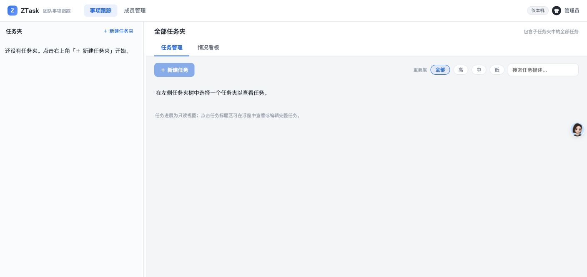
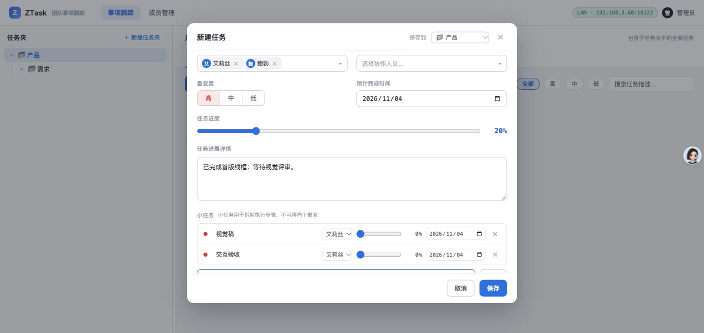
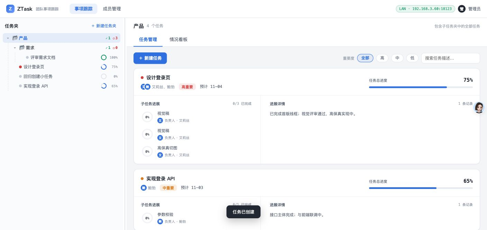
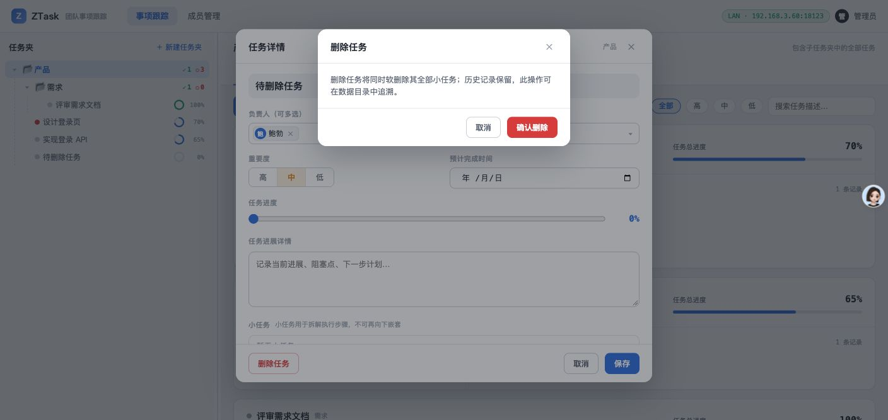
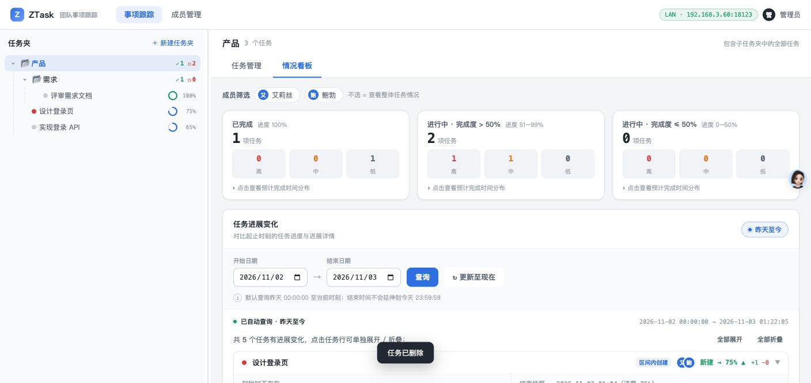
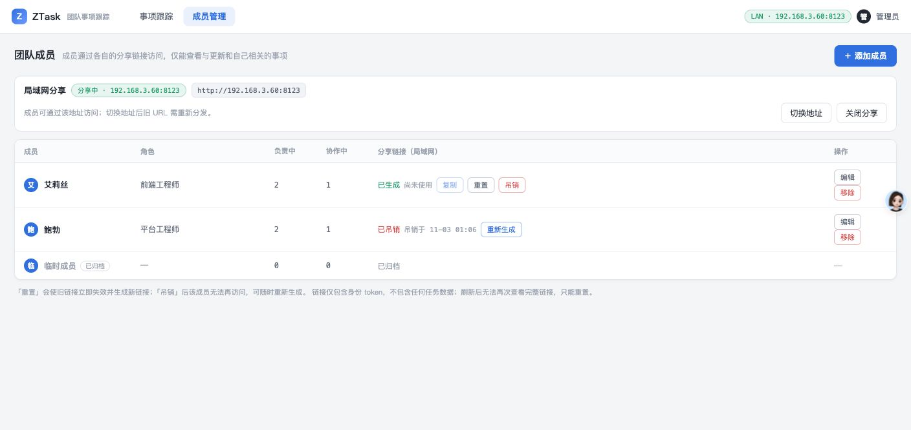
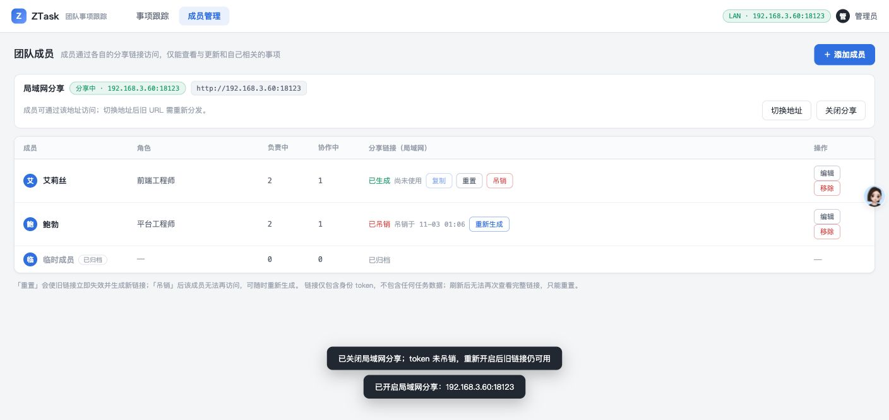
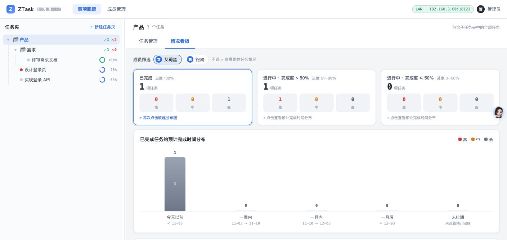
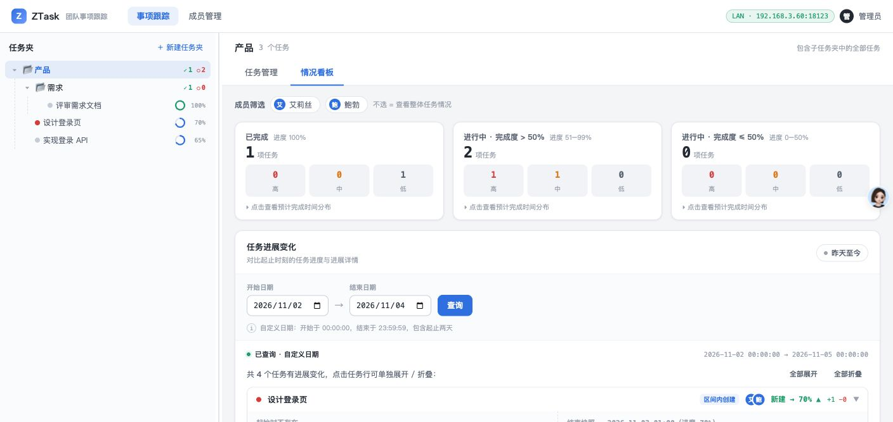
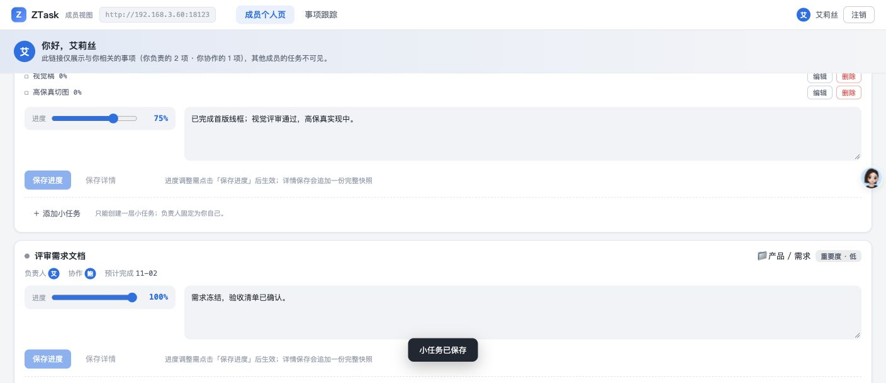
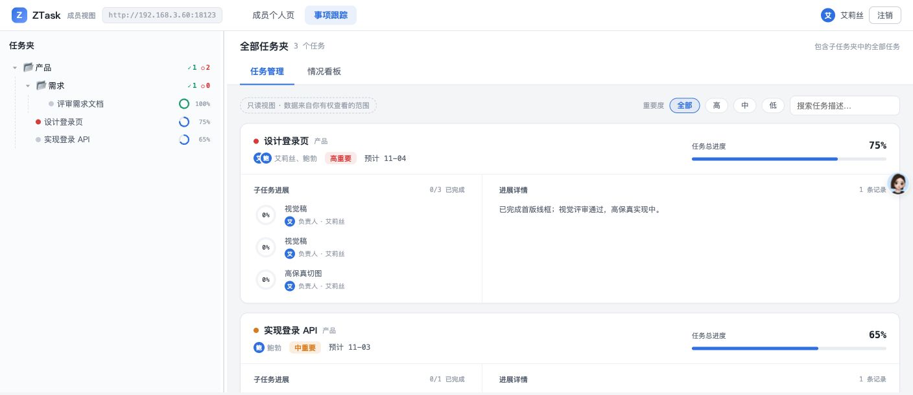
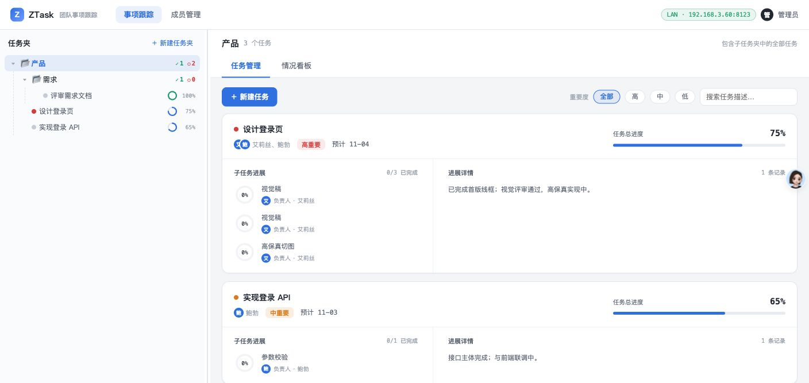
Automated Coverage Assessment
5 areas reviewed| 领域 | 自动化看护 | 结论 | 建议 |
|---|---|---|---|
Conclusion
修复后全功能通过设计功能点除未列入 F2 验收的双击重命名外全部通过；3 个冒烟发现的 P1 问题均有失败证据、修复代码、自动化看护和 GUI 回归证据。
- pnpm verify:docs、pnpm test 全绿：54 个测试文件、401 个测试。
- 删除、创建小任务、LAN 端口三处已完成失败→修复→回归闭环。
- 任务夹双击重命名的自动化触发问题被单独记录为 warn，不作为 F2 验收失败。
Evidence captured with Computer Use against an isolated local data directory; all share tokens redacted and not embedded in report JSON.